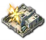
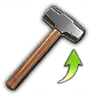
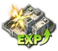
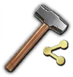
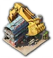
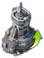
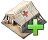
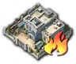
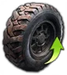

← Season 1 guideClass Hall · Radiated Land
Season 1 class skills
Compare 45 skills and 152 rank effects. Browse by class, or open an individual skill to see effects, prerequisites and cooldowns.
Engineer18 skills · growth and support
War Leader18 skills · combat and recovery
Shared Season 19 skills · monsters and pathogen
Free talent items and resets · Class Lv.40 cap · 1 skill point per class level
Engineer
Start with Contribution Reward and Stamina Recovery if you donate, help and claim free stamina regularly. Queue long upgrades or research before using the Lv.15 active skills.
Class Lv.1
Accelerate ProductionInstantly gain 4h worth of Food, Metal and Oil from your Shelter.
| Rank | In-game effect |
|---|---|
| 1 | Instantly gain 4h worth of Food, Metal and Oil from your Shelter. Cooldown: 23.5h. |
| 2 | Instantly gain 8h worth of Food, Metal and Oil from your Shelter. Cooldown: 23.5h. |
| 3 | Instantly gain 12h worth of Food, Metal and Oil from your Shelter. Cooldown: 23.5h. |
| 4 | Instantly gain 16h worth of Food, Metal and Oil from your Shelter. Cooldown: 23.5h. |
| 5 | Instantly gain 24h worth of Food, Metal and Oil from your Shelter. Cooldown: 23.5h. |
Contribution RewardGain 100% more Alliance Coins when donating to Alliance Tech or helping allies.
| Rank | In-game effect |
|---|---|
| 1 | Gain 100% more Alliance Coins when donating to Alliance Tech or helping allies. |
Class Lv.5
Stamina RecoveryGain 50% more Stamina when claiming daily free Stamina.
| Rank | In-game effect |
|---|---|
| 1 | Gain 50% more Stamina when claiming daily free Stamina. |

Demolition SpecialistIncrease Troops' Destruction by 100 and unlock Demolish Ruins.
| Rank | In-game effect |
|---|---|
| 1 | Increase Troops' Destruction by 100 and unlock Demolish Ruins. |
| 2 | Increase Troops' Destruction by 200 and unlock Demolish Ruins. |
| 3 | Increase Troops' Destruction by 300 and unlock Demolish Ruins. |
| 4 | Increase Troops' Destruction by 400 and unlock Demolish Ruins. |
| 5 | Increase Troops' Destruction by 500 and unlock Demolish Ruins. |
Class Lv.10

Free ConstructionFree construction time +48m.
| Rank | In-game effect |
|---|---|
| 1 | Free construction time +48m. |
| 2 | Free construction time +96m. |
| 3 | Free construction time +144m. |
| 4 | Free construction time +192m. |
| 5 | Free construction time +240m. |
Free ResearchFree research time +48m.
| Rank | In-game effect |
|---|---|
| 1 | Free research time +48m. |
| 2 | Free research time +96m. |
| 3 | Free research time +144m. |
| 4 | Free research time +192m. |
| 5 | Free research time +240m. |
Class Lv.15
Build NowInstantly shorten all Building Queues by 120m.
| Rank | In-game effect |
|---|---|
| 1 | Instantly shorten all Building Queues by 120m. Cooldown: 47.5h. |
| 2 | Instantly shorten all Building Queues by 240m. Cooldown: 47.5h. |
| 3 | Instantly shorten all Building Queues by 360m. Cooldown: 47.5h. |
| 4 | Instantly shorten all Building Queues by 480m. Cooldown: 47.5h. |
| 5 | Instantly shorten all Building Queues by 600m. Cooldown: 47.5h. |
Instant ResearchInstantly shorten all Research Queues by 240m.
| Rank | In-game effect |
|---|---|
| 1 | Instantly shorten all Research Queues by 240m. Cooldown: 47.5h. |
| 2 | Instantly shorten all Research Queues by 480m. Cooldown: 47.5h. |
| 3 | Instantly shorten all Research Queues by 720m. Cooldown: 47.5h. |
| 4 | Instantly shorten all Research Queues by 960m. Cooldown: 47.5h. |
| 5 | Instantly shorten all Research Queues by 1200m. Cooldown: 47.5h. |
Class Lv.20
Team Fast MarchTroop March Speed +10% when joining or returning from a Rally.
| Rank | In-game effect |
|---|---|
| 1 | Troop March Speed +10% when joining or returning from a Rally. |
| 2 | Troop March Speed +20% when joining or returning from a Rally. |
| 3 | Troop March Speed +30% when joining or returning from a Rally. |
| 4 | Troop March Speed +40% when joining or returning from a Rally. |
| 5 | Troop March Speed +50% when joining or returning from a Rally. |
Siege BannerPlace a [Battle Flag] on open ground. Allied troops within range gain Destruction +100 (stackable up to 5 times). Lasts 30m,
| Rank | In-game effect |
|---|---|
| 1 | Place a [Battle Flag] on open ground. Allied troops within range gain Destruction +100 (stackable up to 5 times). Lasts 30m, Cooldown: 71.5h. |
Class Lv.25

Class InspirationGain 20% more Class EXP when damaging City Durability.
| Rank | In-game effect |
|---|---|
| 1 | Gain 20% more Class EXP when damaging City Durability. |
| 2 | Gain 40% more Class EXP when damaging City Durability. |
| 3 | Gain 60% more Class EXP when damaging City Durability. |
Logistics SupportWhile reinforcing an ally's Base, reduce the death rate of soldies in the Drill Ground by 5% (does not stack).Reduce the death rate of soldiers in the Drill Ground by 5% (does not stack).
| Rank | In-game effect |
|---|---|
| 1 | While reinforcing an ally's Base, reduce the death rate of soldies in the Drill Ground by 5% (does not stack).Reduce the death rate of soldiers in the Drill Ground by 5% (does not stack). |
| 2 | While reinforcing an ally's Base, reduce the death rate of soldies in the Drill Ground by 10% (does not stack).Reduce the death rate of soldiers in the Drill Ground by 10% (does not stack). |
| 3 | While reinforcing an ally's Base, reduce the death rate of soldies in the Drill Ground by 15% (does not stack).Reduce the death rate of soldiers in the Drill Ground by 15% (does not stack). |
| 4 | While reinforcing an ally's Base, reduce the death rate of soldies in the Drill Ground by 20% (does not stack).Reduce the death rate of soldiers in the Drill Ground by 20% (does not stack). |
| 5 | While reinforcing an ally's Base, reduce the death rate of soldies in the Drill Ground by 25% (does not stack).Reduce the death rate of soldiers in the Drill Ground by 25% (does not stack). |
Class Lv.30

Cooperative ConstructionUse on an ally to grant both of you +10% building speed (cannot stack). Lasts 60m.
| Rank | In-game effect |
|---|---|
| 1 | Use on an ally to grant both of you +10% building speed (cannot stack). Lasts 60m. Cooldown: 23.5h. |
| 2 | Use on an ally to grant both of you +20% building speed (cannot stack). Lasts 60m. Cooldown: 23.5h. |
Cooperative ResearchUse on an ally to grant both of you +10% research speed (cannot stack). Lasts 60m.
| Rank | In-game effect |
|---|---|
| 1 | Use on an ally to grant both of you +10% research speed (cannot stack). Lasts 60m. Cooldown: 23.5h. |
| 2 | Use on an ally to grant both of you +20% research speed (cannot stack). Lasts 60m. Cooldown: 23.5h. |
Class Lv.35

Cost EfficiencyBuilding upgrade resource cost reduced by 1%.
| Rank | In-game effect |
|---|---|
| 1 | Building upgrade resource cost reduced by 1%. |
| 2 | Building upgrade resource cost reduced by 2%. |
| 3 | Building upgrade resource cost reduced by 3%. |
| 4 | Building upgrade resource cost reduced by 4%. |
| 5 | Building upgrade resource cost reduced by 5%. |
Efficient UtilizationTech research resource cost reduced by 1%.
| Rank | In-game effect |
|---|---|
| 1 | Tech research resource cost reduced by 1%. |
| 2 | Tech research resource cost reduced by 2%. |
| 3 | Tech research resource cost reduced by 3%. |
| 4 | Tech research resource cost reduced by 4%. |
| 5 | Tech research resource cost reduced by 5%. |
Class Lv.40
Cooperative HealingUse on an ally to grant both of you +10% hospital capacity (cannot stack). Lasts 240m.
| Rank | In-game effect |
|---|---|
| 1 | Use on an ally to grant both of you +10% hospital capacity (cannot stack). Lasts 240m. Cooldown: 71.5h. |
| 2 | Use on an ally to grant both of you +20% hospital capacity (cannot stack). Lasts 240m. Cooldown: 71.5h. |
| 3 | Use on an ally to grant both of you +30% hospital capacity (cannot stack). Lasts 240m. Cooldown: 71.5h. |
| 4 | Use on an ally to grant both of you +40% hospital capacity (cannot stack). Lasts 240m. Cooldown: 71.5h. |
| 5 | Use on an ally to grant both of you +50% hospital capacity (cannot stack). Lasts 240m. Cooldown: 71.5h. |
Friendship ShieldUse on yourself or an ally to grant a 1h shield (cannot stack).
| Rank | In-game effect |
|---|---|
| 1 | Use on yourself or an ally to grant a 1h shield (cannot stack). Cooldown: 71.5h. |
| 2 | Use on yourself or an ally to grant a 2h shield (cannot stack). Cooldown: 71.5h. |
| 3 | Use on yourself or an ally to grant a 4h shield (cannot stack). Cooldown: 71.5h. |
War Leader
Pick skills that match your alliance assignment. For recovery, Field Emergency Care heals untreated hospital troops; it does not revive troops already lost.
Class Lv.1
Instant RecallDuring your first 1 relocation(s) each day, all troops outside the Base instantly return.
| Rank | In-game effect |
|---|---|
| 1 | During your first 1 relocation(s) each day, all troops outside the Base instantly return. |
| 2 | During your first 2 relocation(s) each day, all troops outside the Base instantly return. |
| 3 | During your first 3 relocation(s) each day, all troops outside the Base instantly return. |
| 4 | During your first 4 relocation(s) each day, all troops outside the Base instantly return. |
| 5 | During your first 5 relocation(s) each day, all troops outside the Base instantly return. |
Reserve MobilizationInstantly gain 50 max-tier Soldiers (cannot exceed Drill Ground capacity).
| Rank | In-game effect |
|---|---|
| 1 | Instantly gain 50 max-tier Soldiers (cannot exceed Drill Ground capacity). Cooldown: 23.5h. |
| 2 | Instantly gain 100 max-tier Soldiers (cannot exceed Drill Ground capacity). Cooldown: 23.5h. |
| 3 | Instantly gain 150 max-tier Soldiers (cannot exceed Drill Ground capacity). Cooldown: 23.5h. |
| 4 | Instantly gain 200 max-tier Soldiers (cannot exceed Drill Ground capacity). Cooldown: 23.5h. |
| 5 | Instantly gain 250 max-tier Soldiers (cannot exceed Drill Ground capacity). Cooldown: 23.5h. |
Class Lv.5

Drill Ground MaintenanceDrill Ground Capacity +2%. (Excess soldiers remain if capacity drops, but you cannot receive more.)
| Rank | In-game effect |
|---|---|
| 1 | Drill Ground Capacity +2%. (Excess soldiers remain if capacity drops, but you cannot receive more.) |
| 2 | Drill Ground Capacity +4%. (Excess soldiers remain if capacity drops, but you cannot receive more.) |
| 3 | Drill Ground Capacity +6%. (Excess soldiers remain if capacity drops, but you cannot receive more.) |
| 4 | Drill Ground Capacity +8%. (Excess soldiers remain if capacity drops, but you cannot receive more.) |
| 5 | Drill Ground Capacity +10%. (Excess soldiers remain if capacity drops, but you cannot receive more.) |

Hospital MaintenanceHospital Capacity +2%. (If capacity drops, excess wounded soldiers are lost, prioritizing lower-level ones.)
| Rank | In-game effect |
|---|---|
| 1 | Hospital Capacity +2%. (If capacity drops, excess wounded soldiers are lost, prioritizing lower-level ones.) |
| 2 | Hospital Capacity +4%. (If capacity drops, excess wounded soldiers are lost, prioritizing lower-level ones.) |
| 3 | Hospital Capacity +6%. (If capacity drops, excess wounded soldiers are lost, prioritizing lower-level ones.) |
| 4 | Hospital Capacity +8%. (If capacity drops, excess wounded soldiers are lost, prioritizing lower-level ones.) |
| 5 | Hospital Capacity +10%. (If capacity drops, excess wounded soldiers are lost, prioritizing lower-level ones.) |
Class Lv.10
War FrenzyWhile in War Frenzy, DMG +1%.
| Rank | In-game effect |
|---|---|
| 1 | While in War Frenzy, DMG +1%. |
| 2 | While in War Frenzy, DMG +2%. |
| 3 | While in War Frenzy, DMG +3%. |
| 4 | While in War Frenzy, DMG +4%. |
| 5 | While in War Frenzy, DMG +5%. |
Field Emergency CareHeal up to 1000 untreated Soldiers in the Hospital.
| Rank | In-game effect |
|---|---|
| 1 | Heal up to 1000 untreated Soldiers in the Hospital. Cooldown: 71.5h. |
| 2 | Heal up to 2000 untreated Soldiers in the Hospital. Cooldown: 71.5h. |
| 3 | Heal up to 3000 untreated Soldiers in the Hospital. Cooldown: 71.5h. |
| 4 | Heal up to 4000 untreated Soldiers in the Hospital. Cooldown: 71.5h. |
| 5 | Heal up to 5000 untreated Soldiers in the Hospital. Cooldown: 71.5h. |
Class Lv.15

Press the AdvantageWhen attacking a burning Base, enemy soldier death rate +1%.
| Rank | In-game effect |
|---|---|
| 1 | When attacking a burning Base, enemy soldier death rate +1%. |
| 2 | When attacking a burning Base, enemy soldier death rate +2%. |
| 3 | When attacking a burning Base, enemy soldier death rate +3%. |
| 4 | When attacking a burning Base, enemy soldier death rate +4%. |
| 5 | When attacking a burning Base, enemy soldier death rate +5%. |
Battle Prep DrillSoldier Training Speed +5%.
| Rank | In-game effect |
|---|---|
| 1 | Soldier Training Speed +5%. |
| 2 | Soldier Training Speed +10%. |
| 3 | Soldier Training Speed +15%. |
| 4 | Soldier Training Speed +20%. |
| 5 | Soldier Training Speed +25%. |
Class Lv.20
Scorched Land MarchDuring Capital Conquest, march speed in Scorched Land +25%.
| Rank | In-game effect |
|---|---|
| 1 | During Capital Conquest, march speed in Scorched Land +25%. |
| 2 | During Capital Conquest, march speed in Scorched Land +50%. |
Sustain Through WarDaily plunder resource limit increased by 10%.
| Rank | In-game effect |
|---|---|
| 1 | Daily plunder resource limit increased by 10%. |
| 2 | Daily plunder resource limit increased by 20%. |
| 3 | Daily plunder resource limit increased by 30%. |
| 4 | Daily plunder resource limit increased by 40%. |
| 5 | Daily plunder resource limit increased by 50%. |
Class Lv.25
Battlefield MoraleTroop Morale +2%.
| Rank | In-game effect |
|---|---|
| 1 | Troop Morale +2%. |
| 2 | Troop Morale +4%. |
| 3 | Troop Morale +6%. |
| 4 | Troop Morale +8%. |
| 5 | Troop Morale +10%. |

Swift ReinforcementWhen reinforcing an ally's Base, March Speed +10%.
| Rank | In-game effect |
|---|---|
| 1 | When reinforcing an ally's Base, March Speed +10%. |
| 2 | When reinforcing an ally's Base, March Speed +20%. |
| 3 | When reinforcing an ally's Base, March Speed +30%. |
| 4 | When reinforcing an ally's Base, March Speed +40%. |
| 5 | When reinforcing an ally's Base, March Speed +50%. |
Class Lv.30
Rally ChargeWhen joining or launching a Rally, Squad DMG +1% (cannot stack).
| Rank | In-game effect |
|---|---|
| 1 | When joining or launching a Rally, Squad DMG +1% (cannot stack). |
| 2 | When joining or launching a Rally, Squad DMG +2% (cannot stack). |
| 3 | When joining or launching a Rally, Squad DMG +3% (cannot stack). |
| 4 | When joining or launching a Rally, Squad DMG +4% (cannot stack). |
| 5 | When joining or launching a Rally, Squad DMG +5% (cannot stack). |
StealthEnter Stealth mode: Your personal information is hidden in Intel and Battle Reports. Lasts 30m.
| Rank | In-game effect |
|---|---|
| 1 | Enter Stealth mode: Your personal information is hidden in Intel and Battle Reports. Lasts 30m. Cooldown: 47.5h. |
Class Lv.35
Fire SupportWhen reinforcing an ally's Base, attacking soldier death rate +1%.
| Rank | In-game effect |
|---|---|
| 1 | When reinforcing an ally's Base, attacking soldier death rate +1%. |
| 2 | When reinforcing an ally's Base, attacking soldier death rate +2%. |
| 3 | When reinforcing an ally's Base, attacking soldier death rate +3%. |
| 4 | When reinforcing an ally's Base, attacking soldier death rate +4%. |
| 5 | When reinforcing an ally's Base, attacking soldier death rate +5%. |
Reinforcement BoostWhen reinforcing an ally's Base, all defending Heroes gain +1% ATK, DEF, and HP (cannot stack).
| Rank | In-game effect |
|---|---|
| 1 | When reinforcing an ally's Base, all defending Heroes gain +1% ATK, DEF, and HP (cannot stack). |
| 2 | When reinforcing an ally's Base, all defending Heroes gain +2% ATK, DEF, and HP (cannot stack). |
| 3 | When reinforcing an ally's Base, all defending Heroes gain +3% ATK, DEF, and HP (cannot stack). |
| 4 | When reinforcing an ally's Base, all defending Heroes gain +4% ATK, DEF, and HP (cannot stack). |
| 5 | When reinforcing an ally's Base, all defending Heroes gain +5% ATK, DEF, and HP (cannot stack). |
Class Lv.40
RegressedIn battle, a portion of the enemy's wounded soldiers are [Regressed], reducing their tier by 1. Up to 1000 soldiers per day.
| Rank | In-game effect |
|---|---|
| 1 | In battle, a portion of the enemy's wounded soldiers are [Regressed], reducing their tier by 1. Up to 1000 soldiers per day. |
Charge BannerPlace a [War Flag] on the empty ground. Allied Bases within its range gain +2% ATK (stacks up to 5 times). Lasts 30m.
| Rank | In-game effect |
|---|---|
| 1 | Place a [War Flag] on the empty ground. Allied Bases within its range gain +2% ATK (stacks up to 5 times). Lasts 30m. Cooldown: 71.5h. |